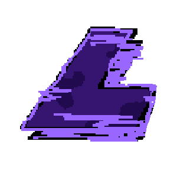
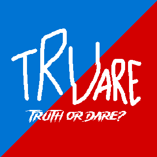

Sentaku | Multipurpose Discord.js Bot | GitHub Repo (With Guide)
Sentaku | Multipurpose Discord.js Bot | GitHub Repo (With Guide) Linear Pirates | made for "MFGJ Summer '23" | Play It
 LOID | Simple platformer made in Scratch | Play It
 JSnake | Iconic "Snake" game made in HTML | Try It | GitHub Repo
Sentaku | Multipurpose Discord.js Bot | GitHub Repo (With Guide)
 Trudare | Truth or Dare Discord.js Bot | GitHub Repo (With Guide)
Windows 95 Key Generator | Try It | GitHub Repo